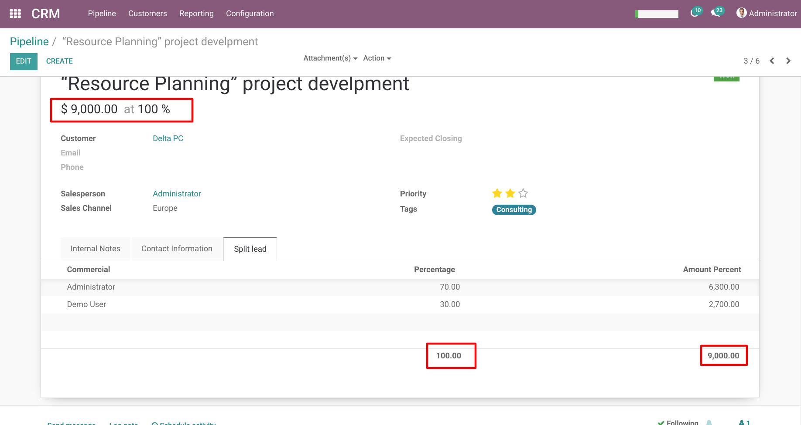
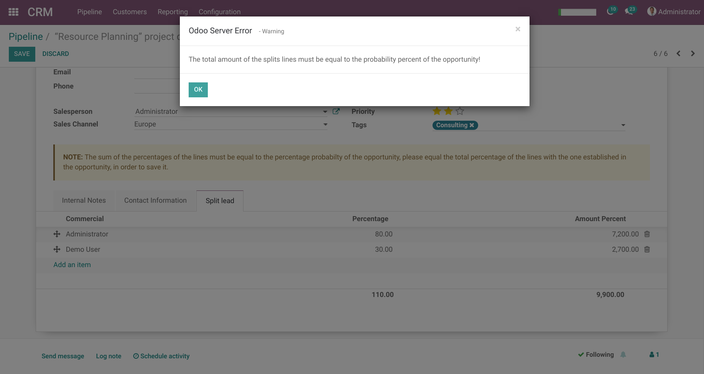
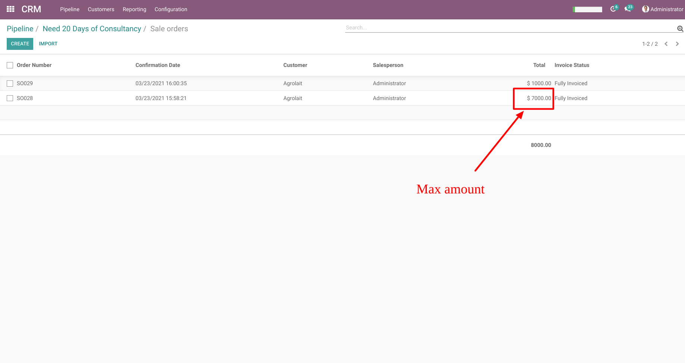
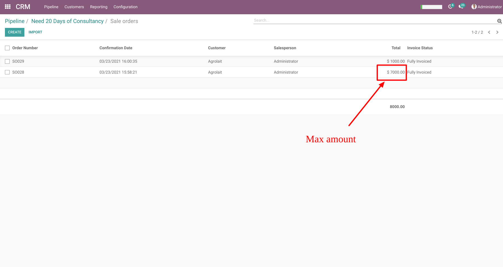
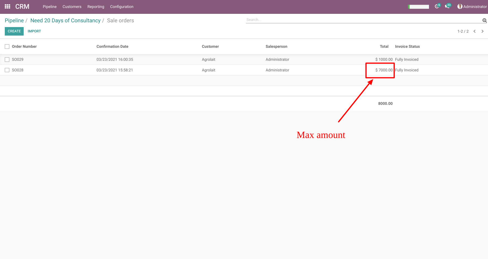

This module added a new feature: when an opportunity is won, we can now add lines based on the participation percentages of the sellers who participated in it.
Won lead
Once the lead reaches 100%, it shows a new tab where we can add those who participated in it, setting the percentage every seller got.

Splitting correctly the lead
If the sum of the percentages from the splitted lines doesn't add 100%, it will show a note, and if we try to save the form it will raise an error, notifying the sum error.

How much has been invoiced of the opportunity
Every time an invoice is created from a sales order related to an opportunity, the expected revenue field will be updated, showing the max amount invoiced.

Split lead report
This module also adds a report for the leads which have splitted lines. This report can be found in CRM/Reporting/Split Lead
 
